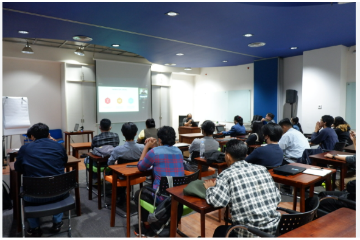

Pengelolaan Manual
- Dokumen tersimpan secara terpisah dan mudah tercecer.
- Pencarian berkas membutuhkan waktu lebih lama.
- Pemantauan kelengkapan belum terpusat.
- Pelanggaran siswa sering dicatat secara manual.
Sistem Informasi dan Pengarsipan Administrasi Guru
Terintegrasi dengan E-Pembinaan Siswa
Digitalisasi Administrasi Guru, Tertib Arsip, dan Pembinaan Siswa yang Terukur

Tim Pengembang SAHABAT BELAJAR

Namun, pengelolaan dokumen dan data pembinaan yang masih manual dapat membuat proses kerja sekolah menjadi lebih lambat dan sulit ditelusuri.
Administrasi guru dalam sistem yang tertib dan mudah diakses.
Dokumen digital dan riwayat administrasi secara lebih aman.
Kelengkapan, verifikasi, serta perkembangan administrasi.
Dokumen yang diperlukan secara cepat tanpa mencari arsip fisik.
Proses verifikasi administrasi dengan lebih terarah.
Pencatatan pelanggaran dan pembinaan siswa yang terintegrasi.
“Dari administrasi yang tersebar menuju pengelolaan digital yang lebih tertib, cepat, dan terukur.”
Membantu sekolah melakukan digitalisasi pengelolaan dan pengarsipan administrasi guru, sekaligus mendukung pembinaan siswa yang lebih efektif.
SIPAGURU merupakan singkatan dari Sistem Informasi dan Pengarsipan Administrasi Guru: media digital agar guru mengelola administrasi secara lebih practical.
Identitas akun di dalam sistem
Data yang tepat membantu layanan administrasi berjalan lebih akurat.
Digunakan untuk mengunggah dokumen administrasi guru ke dalam sistem.
Dokumen tidak hanya diunggah, tetapi memiliki jejak digital yang dapat ditelusuri.
Administrasi lebih tertata, mudah diunggah, mudah ditemukan, dan kelengkapan dapat dipantau.
Pengecekan, verifikasi, dan pemantauan pemenuhan administrasi menjadi lebih efisien.
Mendukung supervisi, pemantauan administrasi, dan pengambilan keputusan berdasarkan data.
Arsip lebih tertib, risiko dokumen hilang berkurang, dan transformasi digital semakin kuat.
Fitur digital untuk membantu sekolah melakukan pencatatan pelanggaran dan proses pembinaan siswa secara lebih terstruktur.

E-Pembinaan bukan sekadar mencatat pelanggaran, tetapi membantu pembinaan yang lebih terukur, adil, dan berkelanjutan.
Sarana untuk menangani kasus yang membutuhkan tindak lanjut lebih lanjut oleh petugas berwenang.
Pencatatan menjadi awal dari proses penanganan yang jelas.
Informasi penanganan dapat diteruskan sesuai kewenangan.
Tindak lanjut dan perkembangan status dapat dipantau.
SIPAGURU adalah langkah bersama menuju administrasi guru yang lebih tertib, pengarsipan yang lebih aman, pemantauan yang lebih mudah, serta pembinaan siswa yang lebih terukur.
Mari Bersama Mewujudkan Sekolah yang Lebih Tertib, Modern, dan Berbasis Digital.